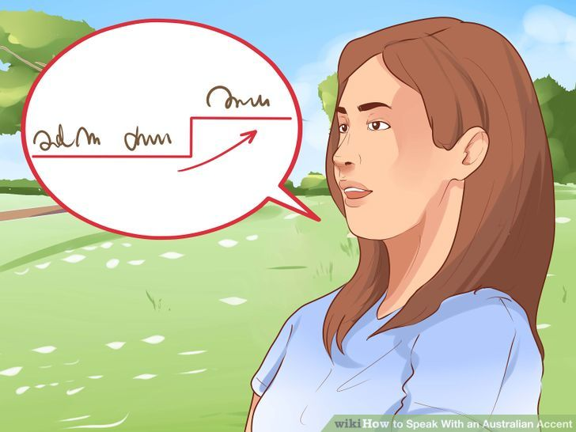

Table of Contents
Pronouncing Words in Australian
- Listen carefully to native speakers and their accents. The most commonly mimicked Aussie accent is a rough, messy, casual and animated style. The accent itself requires using your tongue, cheeks and lips to almost “chew” the words as you say them. The best way to learn this is to hear it from a real Australian. As you listen, note a few things about how they speak:
- What sounds are representative of the accent as a whole? What similarities do you see between words? Pay attention to vowel sounds, as these are the basis of a good accent.
- Most Australians do not sound like the Crocodile Hunter. Their accents are smoother and more mellow.
- Australian developed from colonists in the south of England. As such, it is closely related to the modern Cockney accent, but with a bit of twang.
Keep your intonation steady, quick, and soft.
Picture a long, constant stream of words coming out -- much like the entire sentence is one whole word. To do this, try not to move your tongue so much. One vocal coach suggests you imagine your tongue laying over an exercise ball. You don't make percussive, rhythmic sounds. Rather, the whole sentence just flows out calmly and coolly.
Adjust your pronunciation of "i" to sound more like the i in "oil."
This is one of the more important shifts you'll make. Instead of the I sound ("eye") in "like," "might" or "try," you want something more like an "oi" sound, though not quite so pronounced. To make it, focus on rounding your lips as you say the I sound in "write" "live" or "spite."
- You don't want to fully commit to the "oi" sound, so that you say "wr-oite" or "l-oi-ke." You just want a subtle, rising tone on your I sound. However, starting with the exaggerated "oi" can help you while you learn.
Turn your hard A sound into an "aye" The hard A in "way" or "mate" almost sounds like an "eye" sound.
It is somewhat of a compound sound, like you start with an A and then slide your voice into an I sound. While this takes some practice, you may notice that you lips move outward a bit when you get it right, flatting the O-shape your mouth makes for an A.
- Way → w-aye
- Date → d-aye-t.
Soften a soft A into an "eh" sound.
This part of the accent is regional, as there is no one exact Aussie accent. Simply put, it softens the a sound in words like "hat," "that," "cat," etc. to sound more like an "eh."
- Hat → H-eht.
- That → Th-eht.
- Cat → C-eht.
Curb the T from the end of words.
Aussies replace the hard T sound with a short, almost gutteral noise instead of a full "tuh" sound. If you're having trouble finding it, say the words "uh-oh." The noise is the small, sharp stop you make between the two sounds, like you voice was just cut short. When you say the word, "right," you want to sound more like "r-eye." Practicing "trimming" the T sound to perfect your accent.
- You'll notice for an American T that your tongue pushes off the rough of your mouth. For the Aussie accent, try and make a similar sound without touching your tongue to the rough of your mouth.
- This is called a glottal stop, and is used in several languages and accents.
Drop the R sound from the end of words and replace it with an "ah."
For example, instead of "forever," you would say "forev-ah." Instead of "car," you'd say "cah." This is somewhat similar to the Boston accent, however it is softer and less pronounced. Your voice drops a little bit, almost sounding like an "uh" at the end of the word.
- River → Riv-ah
- Care → Kehr. Here, the R sound is subtle because the word ends in an E. Think of cutting your word off right after you start the R sound.
Cut off the G from any "-ing" ending word.
Oftentimes the Australian accent cuts words short. Words ending in a G are cut off, so that "catching” sounds like “cat-chn." In many ways, this makes Australian similar to an informal American English, a comparison that will serve you well as you practice.
- Running → Runnin'
- Eating → Eatin'
- Ring → Rin'
Raise your voice towards the ends of words.

Sometimes called the "Australian Question Inflection," this little trick is common in everyday Australian speech. Simply raise your voice towards the end of a sentence, exactly like you were asking a question. Think of getting a little louder, and a little higher pitched, with the last syllable. If you're stuck, ask some questions in your normal voice, noting how you change pitch at the end, and try again.
Adjust your "a" sounds to "ah".
Australians have some of the most relaxed accents in the world, so instead of can't, say kah-nt, and instead of aunt, say ah-nt.